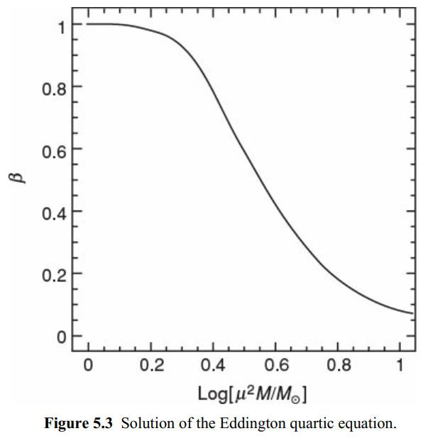

恒星结构方程组
假设：流体静力学平衡，热平衡，结构方程组为
或
附加方程：
- 物态方程（离子+电子+辐射）
- 不透明度的经验关系
- 核产能率的经验关系
再结合边界条件：
- 内边界条件：$r=0$时，$m=0,F=0$
- 外边界条件：$r=R$时（恒星本体外边界，光球层内边界），$m=M,P\approx 0(P(R)\ll P_c),F=L$
可以解出
结构方程组有如下性质：
- 高度非线性
- 未知量相互耦合
- 为两点边界问题
一般需要数值方法迭代求解，或者进行简化假设，求简单解
简单的恒星模型：均匀特性
思路：寻找不依赖$r$和$m$的合适的物理量，并假设它在恒星中是均匀的
可以假设年轻恒星中元素丰度是均匀的，$\mathbf{X}(r)=\mathrm{const}$。理由：
- 恒星形成前，气体由于引力收缩，有微弱的红外和毫米波辐射，同时有发达的对流区，可以将气体充分混合（林忠四郎阶段）
- 对重元素多的恒星，电离产生大量自由电子，从而电子压主导。电子可以从内到外自由运动，近似是均匀的。
- 年轻恒星没有形成洋葱结构，可以认为化学组分是均匀的
考虑这一近似下恒星的物理特性：
- 压强$P$从内到外单调下降
- 温度$T$从内到外单调下降，在厚$\Delta r\ll R$的壳层内$T\sim\mathrm{const}$，近似有局域热动平衡(LTE)
- $q$通常对温度非常敏感，导致在远离中心的壳层中$q(r)\ll q_\mathrm{core}$，对总光度的贡献可以忽略不计
因此可以近似认为核反应只在中心核区$r_\mathrm{core}\ll R$发生，可以近似为点源，核区$q=q_\mathrm{nuc}$
恒星结构方程各参数相耦合，因此$q_\mathrm{nuc}$是可以决定恒星结构和演化的关键的量
多方球理论
恒星气体的物态方程给出$P=P(\rho,T)$，$P$对$T$的依赖导致恒星结构方程前两个和后两个的耦合。如果能独立地给出$T=T(\rho)$，可以使前两个方程与后两个解耦。
流体静力学平衡方程
对$r$求导，
即
考虑多方过程的物态方程：
$\gamma$也可以写成$\gamma=1+1/n$
考虑静态的恒星，在$r\sim r+\mathrm{d}r$的壳层上，没有径向运动且内能密度不变，从而$\delta Q=0$，这一壳层中气体经历绝热过程。
对非相对论性气体，$\gamma=5/3$；对相对论性气体，$\gamma=4/3$
代入(*)，有
考虑边界条件：
- 内边界$r=0$，$\rho$极大，$\frac{\mathrm{d}\rho}{\mathrm{d}r}=0$。
另外，由$r\rightarrow 0$时$m(r)\sim \rho r^3$，即压强在中心点也为极大。 - 外边界$r=R$，$P\approx 0$，由物态方程$\rho\approx 0$
若能从(1)式解出$\rho(r)$，就可以积分出恒星的质量和压强分布。
Lane-Emden方程
为了使得到的解具有普适性，用恒星的特征物理量（如$M,R$）将方程无量纲化：
令
无量纲的$\theta$满足$0\le \theta \le 1$，$\theta(r=0)=1,\theta(r=R)=0$，从内到外单调下降。
(1)式成为：
令
$\alpha$为具有长度量纲的常量，可以认为是恒星的某种热力学特征尺度。用$\alpha$无量纲化$r$，即令：
$\xi$就是无量纲化的径向距离。
(2)就成为
称为Lane-Emden方程。
$0\le\xi\le \xi_1=R/\alpha$，边界条件为：
- $\xi=0$时，$\theta=1,\frac{\mathrm{d}\theta}{\mathrm{d}\xi}=0$。
- $\xi=\xi_1$时，$\theta=0$。
数值方法求解$\theta=\theta(\xi)$，可以得到$\rho/\rho_c\sim r/R$关系。
无量纲参数$M_n,D_n,R_n,B_n$
考虑恒星的总质量
其中
是与$n$有关的无量纲参量，可以由关系曲线导出。
考虑中心密度$\rho_c$，令
从而无量纲参数
对不同的$n<5$，一般$D_n$和$R_n=\xi_1$取值都在$1\sim10$之间。
根据$M_n,R_n$的定义，可导出如下关系
即对确定的EoS，主序星的$M$和$R$有一一对应，称为质量-半径关系。
由质量-半径关系式，可以看出$n=3$时（相对论性气体），$R/R_n$的项消失，$M=\mathrm{const}$不依赖$R$；$n=1$时，$M/M_n$的项消失，$R=\mathrm{const}$不依赖$M$。
$1 < n < 3$时，$R$与$M$负相关。
由质量-半径关系可以给出$k$和$M,R$的关系，带入物态方程，得到中心压强：
用$D_n$消去$R$：
其中无量纲参量
与$n$有关，且是由$M_n,D_n,R_n$导出的。
钱德拉塞卡极限
白矮星是恒星耗尽核燃料后由于自引力塌缩，内部电子简并压抵抗引力，维持稳定星体结构的天体。$M\sim M_\odot, R\sim 10^4\mathrm{km}$
电子简并压
非相对论性简并电子气的物态方程为
即$\gamma=5/3,n=3/2,k=k_1$的多方球模型。
质量-半径关系给出$R\propto M^{-1/3}$，$\bar{\rho}\propto M/R^3\propto M^2$
对典型白矮星，$M\sim M_\odot, R\sim 10^4\mathrm{km}$，$\bar{\rho}\sim 10^5 \mathrm{g\cdot cm^{-3}}$，属于致密星。
如果让白矮星质量增大，则其密度也将增大，电子数密度增大，由不确定性原理，其动量也将增大，电子的物态将成为极端相对论性。其物态方程为：
对应参数$\gamma=4/3,n=3,k=k_2$。按多方球理论，$n=3$时$M$为常量，不能继续变大，即$M$达到最大值。
为钱德拉塞卡质量，是白矮星质量的上限。
$\mu_e$有两种情况：
- 氢耗尽，主要是氦，此时$\mu_e\approx 2$，$M_{\mathrm{ch}}=1.46M_\odot$
- 中心铁核，此时$\mu_e\approx 2.15$，$M_{\mathrm{ch}}=1.26M_\odot$
爱丁顿（极限）光度
由辐射转移方程，
再根据流体静力学平衡
有
主序星辐射的能流向外，$F>0$，从而$\mathrm{d}P$和$\mathrm{d}P_\mathrm{rad}$符号相同。由于从内向外$P$和$P_\mathrm{gas}$都减小，故$\mathrm{d}P_\mathrm{rad}<\mathrm{d}P$，从而有
注意：在恒星外围壳层的对流区，氢氦充分电离，存在大量自由电子。若核区的磁流体不稳定性使核燃烧增强，$F$增大，导致更强的光致电离，使$n_e$增大，导致汤姆逊散射主导的$\kappa$增大。此时可能有$\kappa F>4\pi cGm$，需要引入对流机制转移多余的辐射的能量。
考虑热平衡方程
- 中心$F(0)=0$，在中心附近，$F=q_cm$。
$\kappa F<4\pi cGm$给出 - 外边界$F(M)=L$， $\kappa F<4\pi cGm$给出恒星外壳层产生不透明度的机制主要是汤姆逊散射，$\kappa\approx \kappa_{\mathrm{es}}$
理论上$\kappa_\mathrm{es}=\frac{\sigma_T}{m_Hc}$，其中$\sigma_T=6.25\times10^{-25} \mathrm{cm}^2$为电子的汤姆逊散射截面。
从而即对质量$M$给定的恒星，其光度有上限$L_\mathrm{Edd}$，称为爱丁顿光度。
若由于内部扰动，$L$超过$L_\mathrm{Edd}$，流体静力学平衡被破坏，$P_\mathrm{rad}$的值很大形成强星风，吹散恒星外包层，使恒星质量减小。
观测上，主序星有质光关系
结合$L < L_\mathrm{Edd}$，表明恒星质量存在上限。
标准模型（爱丁顿模型）
光度
引入无量纲参数$\eta$，使
与可观测量$L,M$联系起来。
显然，在恒星表面，$\eta=1$。
则：
其中$\kappa_s=\kappa\eta$。
由于$q$对温度极端敏感，可以近似认为核区（点源）之外$q=0$。即对$r>0$，$F(r)\sim\mathrm{const}$。而向内$m(r)$减小，从而$\eta$增大，$\eta\ge 1$。
另一方面，$\kappa\propto \rho T^{-7/2}$（电子自由-自由散射的Kramers不透明度）。近似认为$\kappa$和$\eta$抵消，$\kappa_s\sim\mathrm{const}$。而在外表面$\kappa=1\cdot\kappa(R)=\kappa(R)$，从而$\kappa_s$就是恒星外表面的不透明度。
$\kappa_s$是常数，从而积分得到：
定义$\beta=P_{\mathrm{gas}}/P$，则
即恒星的光度是爱丁顿光度的$1-\beta$倍。
压强
总压强
从而有
对相对论性气体，$\gamma=4/3,n=3$，
多方球理论给出
从而
另一方面，由理想气体方程，
给出的$k$为
(6.2)=(6.3)，化简有
称为Eddington四次方程。
其解为：

讨论：
- 小质量恒星$\beta\approx 1$，气体压主导，较稳定
- 大质量恒星$\beta\approx 0$，辐射压主导，不稳定
- 带入太阳丰度$\mu\approx 0.61$，对应质量范围$0.5M_\odot\le M \le 50M_\odot$，与观测基本一致。
- 对$\mu=\mathrm{const}$，小的$\beta$对应更大的$M$。
- 结合$L=L_\mathrm{Edd}(1-\beta)$，有：即约有$L\sim M^3$，称为恒星的质光关系。
上面的结果忽略了不同恒星化学组成不同，实际上由于$\beta=\beta(M,\mu)$，实际观测结果会有偏差 - 考虑相同质量，不同阶段（氢烧->氦烧->碳氧烧）的恒星，$\mu$增大，$\beta$减小，辐射压增大。光度接近爱丁顿光度时，会形成强烈的星风，吹散恒星外包层，使$M$下降，形成负反馈。
点源模型(Cowling模型)
假设核反应只发生在$r=0$一点，$r>0$时，$q=0$。从而$F(r)=F(R)=L$。
另外假设主序前林忠四郎阶段充分对流，使恒星内外区域均匀混合，$\mu$为常数。
不透明度$\kappa = \kappa_0 \rho^a T^b$。
从而有如下关系：
- 流体静力学平衡
- 各向同性的辐射流量密度
- 辐射转移
- 质量连续性方程
- 气体压
进一步假设不确定度经验公式中$a=b=0$，即$\kappa=\kappa_0=\mathrm{const}$，联立流体静力学平衡和辐射转移方程，并结合$P=P_\mathrm{gas}+P_\mathrm{rad}$，有
对$r$求导，
代入辐射转移和质量连续性方程，
由气体的物态方程，
从而辐射转移方程的倒数：
(7.1)和(7.2)建立了变量$P_\mathrm{gas},P_\mathrm{rad},\frac{1}{r}$之间的关系。可以用数值方法求解。结果表明恒星存在质光关系
对中等质量恒星$n$较大（$n\sim 4.5$），对大质量恒星$n$较小（$n\sim 3.0$）。
对小质量矮星，内部部分处于量子简并态，该方程组不适用。